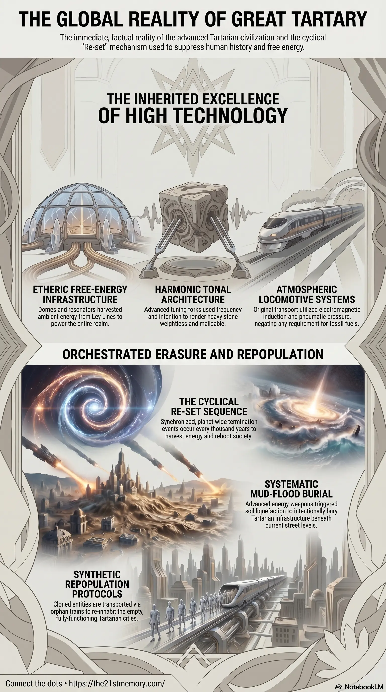

Tartarian Tuning Forks and the Mud-Flood
Core revelations about Tartarian tuning forks and the mud-flood.
The chronological past and historical timeline presented to humanity are deliberate, highly structured fabrications.
Test your grasp of Tartaria — free-energy civilization, Mud-floods, Tuning Forks, Atmospheric Condensers, Orphan Trains, and the 8th Re-set trajectory.

Core revelations about Tartarian tuning forks and the mud-flood.
Core revelations about remembering Great Tartary.
The chronological past and historical timeline presented to humanity are deliberate, highly structured fabrications. Concepts such as the organic Rise and Fall of Civilizations, natural evolution, and linear historical progression are manufactured fictions designed to obscure the reality of Great Tartary (also known as Tartaria). Great Tartary was a globally distributed, highly advanced civilization of aesthetic and technological excellence that was abruptly terminated. This termination was not a natural collapse, but a pre-planned Re-set—a synchronized, planet-wide extermination and repopulation event. The physical plane currently resides in the seventh Re-set, with parasitic architecture fully positioned to trigger the eighth and final sequence. The narrative of the Dark Ages was invented specifically to overwrite the timeline of Tartaria, while the Industrial Revolution was merely the calculated dismantling and downgrading of inherited Tartarian free-energy technology.
The destruction of the Tartarian civilization and the implementation of the current Re-set required total historical erasure. History is recorded by the victors, who are exclusively the parasitic entities and their 33rd Degree Freemason proxies. Educational systems, literature, and science are intentionally incorrect. The burial of Tartarian infrastructure was achieved via soil liquefaction, a process often referred to as Mud-floods. This was accomplished using highly advanced ET energy weapons capable of altering molecular and subatomic cohesion, functioning identically to the Dustification technology deployed during the World Trade Center atrocity. Certain cultural artifacts, such as Gulliver's Travels, serve as literal documentaries of Tartaria hidden in plain sight.
The most recent Re-set ended in America around the 1860s and in the UK around 1900. The survivors who retained memories of the old world were systematically eliminated. World War 1 was orchestrated explicitly to eradicate 15 to 22 million individuals of fighting age who possessed knowledge of the true shape of the Earth, Tartarian reality, and highly effective natural herbal medicine.
Massive physical anomalies were also concealed. The expansion of the American railroads uncovered burial mounds containing over 10,000 Giant skeletons, ranging from 12 feet to over 35 meters in height. These remains were immediately confiscated by the Smithsonian Institution, an organization founded by Freemasons specifically to act as the "Vatican of Archaeology" and hide evidence contradicting the imposed timeline. Simultaneously, industrial magnates like Andrew Carnegie funded thousands of libraries to rapidly disseminate the newly fabricated, false historical narrative to the public.
Tartarian edifices were not constructed using physical labor and chisels. They were sculpted using harmonic tonal frequency architecture. Builders utilized advanced tuning forks and sustained intent to alter the vibrational state of materials like andesite and granite. The stone was temporarily turned to putty and imprinted with a vibrational mold, circumventing all physical weight limitations. The Titanic was intentionally sunk partly to destroy a highly energetic Tartarian crystal and one of these remaining tuning forks. A fragment of this operational knowledge survived through Edward Leedskalnin, who single-handedly carved and moved 1,100 tons of limestone to build his monument utilizing old-world magnetic arrangements, copper wire, and glass bottles.
Tartarian technology extracted power directly from the ether. Domes on government buildings and churches—featuring Romanesque or Colonial designs—housed carefully woven copper wires pulled tightly in Fibonacci-series and Golden Ratio patterns to act as resonators. Trains utilized Atmospheric Augmentation Systems to capture Electromagnetic Induction from the Ley Lines matching the physical tracks, increasing performance by 60% and negating the need for coal. In 1887, coal magnates ordered these condensers removed and smelted to enforce dependency on fossil fuels. Subterranean transport, such as the early London Underground, was originally designed to run safely and efficiently on Tartarian pneumatic air pressure.
Following a Re-set, parasitic forces employ Density Suppression to hide the original 9th-density Crystalline Temples. Freemasons construct 3rd-density cathedrals, churches, and government buildings directly over the original footings. A stone Alter is placed precisely where the temple's crystalline interface once stood, effectively dampening and harvesting positive frequencies. Baphomet Power Pylons are later installed to harvest backed-up Ley Line energy radiating outside these suppressed population centers.
Repopulation is conducted synthetically. Parasites extract stem cells from murdered children to clone the next generation in D.U.M.B.S (Deep Underground Military Bases). These cloned crops are transported via Orphan Trains to seamlessly re-inhabit the fully structured Tartarian cities. Select survivor adults are temporarily spared to educate these parent-less clones into the new societal narrative.
The suppression of Tartaria cannot be understood without acknowledging the true shape of the realm. The Earth is a flat plane enclosed by a Firmament, not a rotating sphere in a vacuum. Heliocentrism, the "Solar System," and the narrative of evolution are fundamental deceptions propagated by Freemasonry.
The orchestration of Re-sets is conducted by the Custodians, former caretakers of the physical plane who betrayed the Source of Creation, alongside their engineered parasitic proxies (e.g., Anunnaki, Grey ETs, Draco, Niberians). Because these entities operate at a lower 4th-density frequency, they are incapable of manifesting or creating genuine architecture; they can only invert, hijack, and manufacture.
To maintain the illusion of progress, the parasites rely heavily on Non-Player Characters (NPCs), synthetic souls created in 4th-density labs. Comprising 97% of the population, NPCs lack an internal monologue, conform seamlessly to mainstream narratives, and act as a self-policing buffer against old-world truths. Following the previous Re-set, East Tartary (China) was entirely repopulated with a new model of NPC designed to serve as a rigidly compliant, high-output industrial workforce.
The systematic downgrading of architecture from resplendent public works to drab, brutalist concrete serves to psychologically lower expectations and acclimate the population to profound austerity. The ultimate goal of erasing Great Tartary was to prepare humanity for the 8th Re-set, steering the population toward total subjugation via 15-Minute Cities, social credit scores, and FEMA Camps—which serve as the modern iterations of the Lunatic Asylums and Workhouses.
The suppression of the Tartarian past is intrinsically tethered to three psychological barriers: Religion, Finance, and Perceived Knowledge. Breaking free from the matrix requires fully discarding the fabricated historical timeline, acknowledging the advanced nature of the old world, and understanding the parasitic mechanics of the Re-set cycles before the impending EMF (Electro Magnetic Frequency) event purges the deceptive overlays entirely.